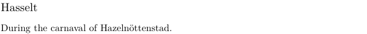

Contents
Summary
The command \structureuservariable is used to fetch user data from structure elements, such as chapters, sections, etc.
Settings
Description
The command \structureuservariable expands to the value of a named user data key belonging to the current structure element. Sectioning environments such as \startchapter or \startsection take two optional assignment lists: the first sets the usual structure settings (for example title or reference), while the second holds free-form key=value pairs that are not part of the built-in sectioning interface.
Inside the structure body \structureuservariable{key} retrieves the matching value. Built-in structure fields are accessed with \structurevariable instead. For a specific section level, use \namedstructureuservariable. The float-side counterpart is \floatuserdataparameter. Because the keys are not predefined, the command is mainly useful in styles and setups that agree on a private key name with the document markup.
Examples
From excursion
-
\startsubject[title=Hasselt][carnaval=Hazelnöttenstad] During the carnaval of {\structureuservariable{carnaval}.} \stopsubject
-
